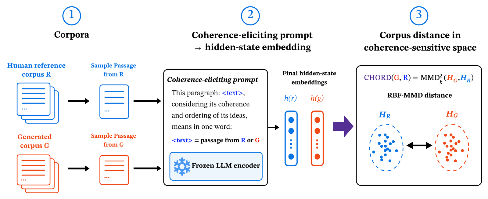

CHORDfigs/chord.png
Coherence-Aware Distributional Evaluation of Open-Ended Text Generation
arXiv preprint, 2026
We propose CHORD, a distributional metric for open-ended generation that accounts for global coherence. It catches coherence failures that perplexity, entropy and MAUVE miss, and its rankings closely match human judgments of sensibility and human-likeness.